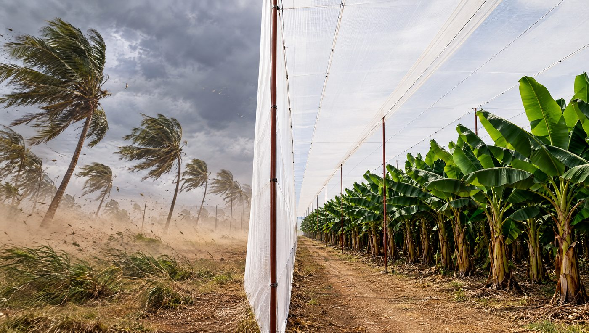
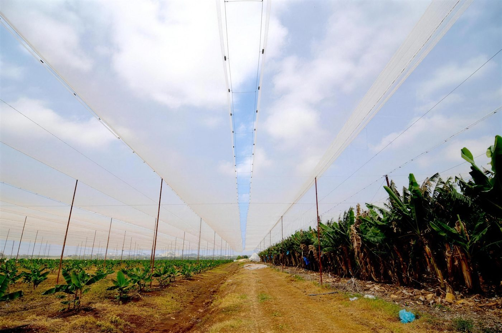

- ענף הבננות בישראל עבר לבתי רשת בתחילת שנות האלפיים, בעיקר כדי לצמצם נזקי רוח. בתוך בתי הרשת התפוקה עלתה בכ-30%.2
- בעמק הירדן בית רשת חוסך 20–30% ממי ההשקיה, ביבול זהה ואף טוב יותר.1 באזורי החוף החיסכון קטן יותר, כ-10%.3
- בתי רשת לבננות מכוסים בדרך כלל ברשת שקופה של 8–15% הצללה.6 שתי רשתות שמסומנות ״10%״ יכולות להתנהג אחרת מאוד ברוח.
- המבנה גבוה, עד כ-6 מטרים,2 ופתוח לרוח. לכן העיגון, הכבלים ההיקפיים ופרטי השוליים הם לב ההנדסה.
- משרד החקלאות מכיר בעלות של ₪8,000–10,400 לדונם לבית רשת גבוה לבננות, לפי גודל השטח. מענקי השקיה והדליה לנטיעת בננות ניתנים רק תחת בית רשת.9
בננה היא צמח גדול עם עלים רחבים ודקים. רוח קורעת אותם, ושמש חזקה ויובש מעלים את צריכת המים. לכן ענף הבננות בישראל העביר בתחילת שנות האלפיים חלק גדול מהגידול מהשטח הפתוח אל בתי רשת.2 היום, מגדל שמתכנן נטיעה חדשה או מחליף מבנה ותיק כבר לא שואל אם להקים בית רשת לבננות. הוא שואל איזה: איזו רשת, באיזה גובה, באיזה עיגון, ואיך המבנה ישרת את המטע עשר שנים ויותר.
המדריך הזה מרכז את מה שהמחקר הישראלי מראה על מים, יבול ובחירת רשת, ואת מה שאנחנו רואים בשטח כשאנחנו מתכננים ומקימים בתי רשת לבננות. אם אתם רק מתחילים, כדאי לקרוא קודם את המדריך מה זה בית רשת חקלאי.
מתאים לכם אם
- אתם מתכננים מטע בננות של 50 דונם ומעלה, בנטיעה חדשה או בהרחבה.
- יש לכם מטע תחת מבנה ותיק, ואתם שוקלים להחליף רשת או מבנה.
- אתם רוצים להבין את כללי המענק לפני שמגישים בקשה.
- חשוב לכם שהמבנה יחזיק שנים, לא רק עונה.
פחות מתאים אם
- השטח קטן מ-50 דונם.
- אתם מחפשים מחיר לרשת בלי תכנון.
- אתם מגדלים בננות בגינה הביתית.
למה בננות עברו לבית רשת
רוח: הסיבה המקורית
הבננה רגישה במיוחד לרוח. עלה קרוע מאבד שטח פוטוסינתזה, ואשכול פגוע יורד בדרגה. לפי חוקרי חוות הבננות בצמח ו-MIGAL, הענף עבר לבתי רשת בתחילת המאה כדי לצמצם נזקי רוח. בתוך בתי הרשת הצמחים היו בריאים וחזקים יותר, והתפוקה עלתה בכ-30% בזכות אשכולות כבדים יותר ופחות אשכולות שאבדו.2 אותו מקור מציין יתרון נוסף: אפשר לגדל בננות גם בחלקות חשופות לרוח, שלא התאימו לגידול בשטח פתוח.
כמה הרוח נחלשת בפנים? בבית רשת מסחרי לבננות בצפון הארץ, בגובה 6 מטרים ותחת רשת ארוגה של 15%, מדדו חוקרים את הקשר בין הרוח בחוץ לזרימת האוויר בפנים. לפי המשוואה שפורסמה, ברוח של 10 מטר לשנייה בחוץ מהירות האוויר בתוך המבנה היא כ-2.6 מטר לשנייה (חישוב שלנו מהמשוואה, למבנה שנמדד).7

קרה, ברד ואירועי קיצון
בית רשת לבננות לא תוכנן כמגן ברד ייעודי. אין מחקר ישראלי שנותן מספר מוסמך על הפחתת נזקי ברד בבננות, ולכן לא נכתוב כאן מספר כזה. מה שכן ידוע: נזקי מזג האוויר לענף אינם תיאורטיים. ב-2025 שילמה קנט למגדלי הבננות כ-29 מיליון ₪, לעומת כ-7 מיליון ₪ ב-2024.1112
בניסוי ההשקיה בצמח, החלקה הפתוחה פיגרה בגדילה כבר בקיץ שאחרי הנטיעה ונפגעה במיוחד בקרה. היא פרחה 23 עד 28 ימים אחרי חלקות הרשת.4 מי שמגדל גם מטעי נשירים או קיווי ימצא את שיקולי הברד במדריך על רשת נגד ברד.
מים
שמש ורוח הם המנועים העיקריים של האידוי, ורשת מחלישה את שניהם. סקירה של חוקרים ממכון וולקני ומחוות הבננות בצמח מצאה שבעמק הירדן בית רשת חוסך 20–30% ממי ההשקיה, ביבול זהה ואף טוב יותר.1 מחקר מאוחר יותר של אותה קבוצה מדייק: בעמקים הפנימיים ההשקיה מתחת לרשת 10% או 20% נמוכה בכ-25% מבשטח פתוח, ובאזורי החוף בכ-10% בלבד.3
המשמעות למתכנן: החיסכון במים תלוי באזור. באזורי החוף הוא קטן יותר, ולכן שם ההחלטה נשענת בעיקר על ההגנה מרוח ועל איכות הפרי.
יבול ואיכות פרי
בניסוי בצמח, בשנה השנייה, הפריחה והקטיף בבית רשת 10% הקדימו לעומת השטח הפתוח, ומשקל האשכול בקטיפים העיקריים היה גבוה ב-5.5 ק״ג. בשנה השלישית משקל האשכול בשטח הפתוח היה נמוך באופן מובהק: 28.6 ק״ג לעומת 31.5 ק״ג.4 בעמק הירדן, חוקרים מעריכים שהגידול בבית רשת מוסיף כטון יבול לדונם (10 טון להקטר).5
חשוב לומר גם את ההסתייגות. בניסוי בצמח ההשוואה בין השטח הפתוח לבתי הרשת היא תצפית באתר אחד. בשנה הרביעית פרחו בשטח הפתוח יותר צמחים, האשכולות היו קלים יותר, והיבול לדונם יצא דומה.4
טביעת רגל המים
מחקר שפורסם ב-Frontiers in Plant Science חישב את טביעת רגל המים של גידולי המטע בצפון עמק הירדן הנמוך. בננה בבית רשת קיבלה את הערך הנמוך ביותר מכל הגידולים שנבדקו: 182 מ״ק מים לטון פרי. זה נמוך בכ-34% מבננה בשטח פתוח.5 לפי המחקר, בעשור שקדם לו כמחצית משטחי הבננות באזור כבר כוסו בבתי רשת.
טביעת רגל המים של גידולי המטע בעמק הירדן
מ״ק מים (מי השקיה ומי גשם) לטון פרי, צפון עמק הירדן הנמוך
הנתונים בטבלה
| ערך | |
|---|---|
| בננה בבית רשת | 182 |
| בננה בשטח פתוח | 275 |
| אבוקדו | 462 |
| תמרים | 765 |
מה מראים הנתונים מעמק הירדן
הניסוי המפורט ביותר בנושא נערך בחוות הבננות בצמח, בחלקה של 10.2 דונם שנשתלה בקיץ 2015. החלקה חולקה לשלושה גושים: בית רשת עם רשת קריסטל ארוגה 10%, בית רשת עם רשת ״פנינה״ ארוגה 20%, ומטע פתוח עם שובר רוח במערב, כמקובל בעמק. בכל גוש הושוו שני משטרי השקיה: לוח ההשקיה המקובל, והשקיה ״דינמית״ שמחזירה כל יום את האידוי המחושב של היום הקודם.4
הדוח המדעי של הניסוי, בהובלת ד״ר שבתאי כהן ממנהל המחקר החקלאי, פורסם ב-Acta Horticulturae. הגרף מציג את הנתונים כפי שפורסמו שם, לשנתיים שבהן הצמחים היו בוגרים.3
כמה מים חוסך בית רשת בבננות
השקיה שנתית ממוצעת במ״מ, שטח פתוח מול רשת 10% ורשת 20%, לפי לוח ההשקיה ולפי השקיה דינמית
הנתונים בטבלה
| ערך | |
|---|---|
| שטח פתוח, לפי לוח ההשקיה | 2330 |
| רשת 10% קריסטל, לפי הלוח | 1814 |
| רשת 20% פנינה, לפי הלוח | 1724 |
| רשת 10% קריסטל, דינמית | 1570 |
| רשת 20% פנינה, דינמית | 1368 |
סיכום ארבע השנים של צוות צמח ומו״פ צפון מראה תמונה דומה, ובמספרים משלו. לפי לוח ההשקיה המקובל: 2,255 מ״מ בשנה בשטח הפתוח, 1,727 מ״מ ברשת 10% ו-1,673 מ״מ ברשת 20%. בהשקיה הדינמית: 1,479 מ״מ ברשת 10% ו-1,344 מ״מ ברשת 20%.4 המספרים שונים מעט מהגרף כי הם ממוצע של ארבע שנים, לא של שנתיים.
ארבע הסתייגויות חשובות לפני שמתרגמים את זה לתכנון:
- כ-40% ממנת ההשקיה בבננות משמשת להדחת מלחים. מנת המים איננה רק מה שהצמח צורך.4
- ההשקיה הדינמית לא פגעה ביבול באופן מובהק.3 עם זאת, בסיכום ארבע השנים הייתה בכמה מדדים נטייה לא מובהקת לטובת הלוח המקובל, וברשת 20% נרשמה ירידה מובהקת בגובה הצמח ובמספר הכפות באשכול.4
- אבק שהצטבר על הרשת הפחית את חדירת הקרינה ב-10% נוספים בסוף העונה היבשה.3 רשת מאובקת היא רשת אחרת.
- זה ניסוי באתר אחד. בתנאים אחרים, באזור אחר ובמים אחרים, המספרים ישתנו.
המסקנה המעשית: בית הרשת הוא הצעד הגדול בחיסכון. ייעול ההשקיה בתוכו הוא צעד שני, וכדאי לעשות אותו בליווי אגרונומי צמוד.

איזו רשת לבננות
בתי רשת לבננות מכוסים בדרך כלל ברשת שקופה עם אחוז הצללה נומינלי של כ-8–15%.6 בתוך הטווח הזה יש שתי החלטות: אחוז ההצללה, ומבנה הרשת עצמה.
קריסטל 10% או פנינה 20%
בניסוי בצמח, בשנה השנייה, רשת 10% נתנה בדרך כלל את התוצאות הטובות ביותר. ברשת 20% פרחו פחות צמחים ונקטפו פחות אשכולות, והיבול בפועל היה נמוך ב-820 ק״ג לדונם לעומת רשת 10%. בשנה השלישית לא נרשמו הבדלים מהותיים בין שתי הרשתות.4
יש גם עובדה פחות מוכרת: ההבדל בין הרשתות מצטמצם עם האבק. בסתיו של השנה השנייה, ההצללה בפועל בשתי הרשתות הייתה דומה, 25% עד 26%.4 ברשת 20% החיסכון במים מעט גדול יותר, כפי שמראה הגרף שלמעלה.
| שאלה | רשת קריסטל 10% | רשת פנינה 20% |
|---|---|---|
| הצללה נומינלית | 10% | 20% |
| הצללה בפועל בסתיו, עם אבק (צמח, שנה ב׳) | 25%–26% | 25%–26% |
| פריחה ויבול בשנה ב׳ | התוצאות הטובות בניסוי | פחות פרחים ואשכולות, יבול נמוך יותר |
| יבול בשנה ג׳ | ללא הבדלים מהותיים בין הרשתות | |
| השקיה לפי הלוח (2017–2018) | 1,814 מ״מ | 1,724 מ״מ |
מקורות הטבלה: ניסוי צמח ומו״פ צפון4 ו-Cohen et al. 2020.3 שני המקורות מתארים אותו ניסוי, באתר אחד.
ארוגה או סרוגה: מה שלא כתוב על התווית
חוקרים בדקו שתי רשתות עם אותה הצללה נומינלית, 10%, אבל במבנה שונה: ארוגה וסרוגה. בבית רשת מסחרי לבננות בצפון, מתחת לרשת הסרוגה מהירות האוויר הייתה גבוהה ב-18% והקרינה ב-7%, לעומת הרשת הארוגה.6 כלומר, ״רשת 10%״ איננה מפרט. צריך לדעת איך היא עשויה, כמה רוח היא עוצרת, ואיך היא מתנהגת עם אבק.
בבית רשת לבננות שהקמנו במערב הגליל נבחרה רשת 11%. ככלל, אחוז ההצללה נקבע אחרי ביקור בשטח, בתוך טווח צר, לפי האזור, החשיפה של החלקה לרוח והמטרות של המגדל. אין רשת אחת שנכונה לכל מטע.
גם באבוקדו השאלה דומה, אבל הסיבות אחרות: קרה, כוויות שמש וברד. הרחבנו עליהן במדריך על בית רשת לאבוקדו.
ההנדסה של בית רשת לבננות
גובה
בננה צומחת גבוה, ובבית רשת היא גבוהה עוד יותר. בניסוי בצמח, הצמחים בבית הרשת היו גבוהים יותר בפריחה מאשר בשטח הפתוח.4 לכן בתי רשת לבננות נבנים גבוהים, עד כ-6 מטרים, וזה אחד הגורמים המרכזיים לעלות שלהם. זו גם הסיבה שבמו״פ בוחנים זני בננה נמוכים יותר.2
הגובה נקבע לפי הזן, מרווחי הנטיעה, הכלים שעובדים במטע, ומרווח הביטחון בין העלווה לרשת. הוא גם עניין רגולטורי: בתכנית הפיתוח של משרד החקלאות מצוין ״נדרש היתר בניה״ לצד בתי הרשת הגבוהים לבננות.9
רוח, עיגון וכבלים
בית רשת לבננות הוא משטח רשת גדול שמונח גבוה מעל הקרקע. כל משב רוח הופך לכוח שעובר מהרשת לכבלים, מהכבלים לעמודים, ומהעמודים לעוגנים בקרקע. ניסוי של מכון וולקני, בבית רשת למטע אפרסקים, מדד את הכוחות האלה ישירות. הכוח בנקודות החיבור של הרשת גדל כפונקציה ריבועית של מהירות הרוח, והיה החזק ביותר בכבלים שבשולי המבנה.8 רוח חזקה פי שניים יוצרת עומס גדול בהרבה מפי שניים, והשוליים נושאים את רובו.
לכן התכנון ההנדסי מתחיל מהשאלות האלה:
- מאיזה כיוון מגיעות הרוחות החזקות, וכמה החלקה חשופה להן.
- מרווחי העמודים ופריסת רשת הכבלים בגג.
- העיגון ההיקפי, וסוג העוגן שמתאים לקרקע בחלקה.
- פרטי השוליים וקירות הצד, שם העומס הגבוה ביותר.
- מעברים לכלים ולקטיף, בלי לפגוע ברציפות המבנה.
כל עמוד, רשת, כבל ואביזר מיוצרים ונבדקים במפעל שלנו לפני שהם יוצאים לשטח. בבית רשת גבוה, רכיב חלש אחד בשוליים מספיק כדי לפתוח את הרשת בסערה.

תחזוקה: הרשת משתנה עם הזמן
רשת שקופה לא נשארת שקופה. בניסוי בצמח, אבק שהצטבר על הרשת הפחית את חדירת הקרינה ב-10% נוספים בסוף העונה היבשה, וגשם מאוחר שניקה את הרשת שינה את התמונה בשנה אחרת.3 צוות הניסוי מציין שכמות האבק משתנה מאוד בין בתי רשת, ואפילו בתוך אותו מבנה: ליד דרך עפר או רחוק ממנה.4 לכן המיקום של דרכי הגישה הוא חלק מהתכנון, ובדיקה תקופתית של הרשת, הכבלים והעיגון היא חלק מהחיים של המבנה. במיוחד אחרי סערה.
החלפת מבנה ותיק במטע קיים
משרד החקלאות מכיר בבתי רשת לבננות גם בשטחים קיימים, לא רק בנטיעה חדשה.9 אבל החלפה במטע פעיל היא פרויקט שונה מהקמה על קרקע ריקה. הצמחים כבר גבוהים, הקטיף נמשך, והעבודה נעשית מעל העלווה.
במקרים רבים אפשר להחליף רשת, ואף חלקים מהמבנה, בלי לעקור את המטע. זה נבדק בסקר: מה מצב העמודים, העוגנים והכבלים, מה אפשר לשמר ומה מחליפים. אחר כך מתכננים את העבודה לפי גושים, כך שחלקים מהמטע ממשיכים לעבוד, ומתאמים אותה עם העונה ועם לוח הקטיף.

מתכננים בית רשת חדש לבננות, או החלפה של מבנה ותיק? ספרו לנו על החלקה, ונחזור אליכם עם כיוון תכנוני ראשון.
עלות ומענקים
העלות המוכרת של משרד החקלאות
לא נפרסם כאן מחיר, כי מחיר אמיתי נגזר מתכנון. אבל יש נקודת ייחוס רשמית: ״העלות המאושרת למנהלה״ בתכנית הפיתוח של מנהלת ההשקעות בחקלאות, מאוגוסט 2023. זה הסכום שהמשרד מכיר בו לצורך חישוב מענק. זו לא הצעת מחיר.9
| בית רשת גבוה לבננות | עלות מוכרת לדונם | הערה בתכנית |
|---|---|---|
| עד 40 דונם | ₪10,400 | נדרש היתר בניה |
| עד 100 דונם | ₪9,500 | נדרש היתר בניה |
| מעל 100 דונם | ₪8,000 | נדרש היתר בניה |
מקור: משרד החקלאות, מנהלת ההשקעות בחקלאות, ״תכנית הפיתוח עפ״י נושאים 2023״.9 לפי התכנית, העלות כוללת תשתית, ברזלים, רשת אחת ועבודה, ואינה כוללת מבנים עם רשת כפולה. כדאי לבדוק אם פורסמה תכנית מעודכנת לפני הגשת בקשה.
הטבלה מראה גם את אפקט הגודל: ככל שהשטח גדל, העלות המוכרת לדונם יורדת. המחיר בפועל תלוי בגורמים שהטבלה לא רואה: חשיפה לרוח, סוג הקרקע, טופוגרפיה, גובה, הרשת שנבחרה, ואם יש מבנה ותיק לפרק. לכן המחיר נגזר מהתכנון, ולכן מתחילים בתכנון.
כלל המענק בבננות: בלי בית רשת אין מענק להשקיה ולהדליה
בתכנית הפיתוח, תמיכה בנטיעת בננות ניתנת רק להגדלת שטחים, ובבתי רשת גם בשטחים קיימים. מענקים למערכת השקיה ודישון ולמערכת הדליה יאושרו רק אם הנטיעה תתבצע תחת בית רשת קיים או חדש. מקרים מיוחדים מובאים לדיון במנהלה.9 כלומר, מבחינת המדינה בית הרשת הוא תנאי לסיוע בבננות, לא תוספת.
מסלול הצפון 2026–2027
באוגוסט 2026 פרסם משרד החקלאות וביטחון המזון מסלול תמיכה לשיקום והרחבת משקים חקלאיים ביישובים בטווח 0–9 ק״מ מגבול לבנון. אחד מאפיקי המסלול הוא הקמה, הרחבה ושדרוג של בתי צמיחה, כולל בתי רשת, ושיעור המענק בו הוא 50% מסכום ההשקעה המאושרת. התהליך דו-שלבי, ובקשה לבית צמיחה מלווה בהיתר בנייה בתוקף או בהמלצת מחוז להיתר, לפי התנאים בנוהל.10 התנאים המחייבים מופיעים בנוהל עצמו.
ההיתר באחריות היזם, וכדאי להתחיל בו מוקדם. אנחנו לא מטפלים ברישוי ובהיתרים, ואומרים את זה כבר בשיחה הראשונה.
מסלול הפרויקט
- מיפוי צרכים וביקור בשטחמה מגדלים, באיזה היקף ובאיזה אזור. בודקים חשיפה לרוח, קרקע, טופוגרפיה, כלים, ואם יש מבנה ותיק.
- תכנון הנדסיגובה, מרווחי עמודים, רשת הכבלים, עיגון ופרטי שוליים, ומפרט הרשת. התכנון מותאם לחלקה, לא מועתק מפרויקט אחר.
- ייצור ובדיקה במפעלעמודים, רשתות, כבלים ואביזרים מיוצרים ונבדקים במפעל שלנו לפני שהם יוצאים לשטח.
- התקנה בשטחצוותים מבוטחים ומוסמכים לעבודה בגובה. במטע קיים העבודה מתוכננת לפי גושים ולפי לוח הקטיף.
- מסירהמעבר משותף על המבנה: מתיחת כבלים, עיגון, שוליים ומעברים.
- תחזוקה לאורך שניםבדיקות תקופתיות ואחרי סערות. אבק ובלאי משנים את הרשת עם הזמן, ולכן התחזוקה היא חלק מהתכנון.
לוח הזמנים נקבע בתכנון ונבנה סביב העונה ולוח הקטיף. חורף גשום הוא חלק מהעבודה בצפון, ולכן מתכננים אותו מראש.
„הפגינו מקצועיות, יצירתיות וגמישות, ועמידה בלוחות זמנים גם כאשר החורפים היו גשומים במיוחד.”
ואחרי המסירה, בית רשת גבוה צריך מישהו שמגיע כשהרוח חזקה.
„גם בימי גשם ורוח עזה הצוות מגיע ונותן פתרון מיידי.”
מה לבדוק לפני שחותמים
- האם הרשת נבחרה לפי האזור והמטרה, ולא רק לפי אחוז ההצללה שעל התווית?
- האם יש חישוב של עומסי רוח ועיגון שמתאים לקרקע בחלקה?
- האם הגובה מתאים לזן, לכלים ולמרווח מעל העלווה?
- האם הרכיבים נבדקים לפני שהם מגיעים לשטח?
- האם הצוות מבוטח ומוסמך לעבודה בגובה?
- מי אחראי לתחזוקה אחרי המסירה, ומה קורה אחרי סערה?
- האם בדקתם את דרישות ההיתר ותנאי המענק לפני ההזמנה?
המספרים במדריך הזה לקוחים ממחקרים באתרים מסוימים, ברוב המקרים בעמק הירדן. באזורי החוף החיסכון במים קטן יותר, ובכל חלקה התוצאה תלויה בזן, במים ובניהול. אנחנו לא מבטיחים יבול. אנחנו מתכננים ובונים מבנה שמאפשר לו לגדול. אנחנו עובדים בפרויקטים מ-50 דונם בישראל, ולא מטפלים ברישוי ובהיתרים.
רוצים לשמוע ישירות מלקוחות? נשמח לחבר אתכם ללקוחות שלנו בברעם, אלרום, יחיעם, מצובה וחניתה, וללקוח שלנו בפורטוגל.
שאלות נפוצות
כמה מים חוסך בית רשת בבננות?
בעמק הירדן החיסכון מגיע ל-20–30% ממי ההשקיה, ביבול זהה ואף טוב יותר.1 בעמקים הפנימיים ההשקיה מתחת לרשת 10% או 20% נמוכה בכ-25% מבשטח פתוח, ובאזורי החוף בכ-10%.3 בניסוי בצמח, השקיה דינמית לפי האידוי היומי חסכה עוד, אבל כדאי ליישם אותה בליווי אגרונומי.
איזו רשת מתאימה לבננות, קריסטל או פנינה?
בניסוי בצמח רשת קריסטל 10% נתנה את התוצאות הטובות בשנה השנייה, וברשת פנינה 20% היבול היה נמוך יותר. בשנה השלישית לא היו הבדלים מהותיים.4 רשת 20% חוסכת מעט יותר מים.3 מעבר לאחוז ההצללה חשוב גם מבנה הרשת: רשת סרוגה ורשת ארוגה עם אותו ״10%״ מעבירות כמות רוח שונה.6
מה הגובה המקובל לבית רשת לבננות?
בתי רשת לבננות נבנים גבוהים, עד כ-6 מטרים.2 הגובה המדויק נקבע לפי הזן, מרווחי הנטיעה, הכלים במטע והמרווח הנדרש מעל העלווה. מבנה גבוה חשוף יותר לרוח, ולכן הגובה והעיגון מתוכננים יחד.
האם יש מענק לבית רשת לבננות?
כן. תכנית הפיתוח של משרד החקלאות מכירה בעלות של ₪10,400 לדונם עד 40 דונם, ₪9,500 עד 100 דונם ו-₪8,000 מעל 100 דונם. אלה עלויות לחישוב המענק, לא מחירים. מענקים להשקיה ולהדליה בנטיעת בננות ניתנים רק תחת בית רשת.9 ביישובים בטווח 0–9 ק״מ מגבול לבנון פועל ב-2026–2027 מסלול ייעודי עם מענק של 50% מההשקעה המאושרת.10
האם צריך היתר בנייה לבית רשת לבננות?
בתכנית הפיתוח 2023 מצוין ״נדרש היתר בניה״ לבתי הרשת הגבוהים לבננות.9 ההיתר באחריות היזם, וכדאי להתחיל בו מוקדם, כי בקשות למענק דורשות אותו. אנחנו לא מטפלים ברישוי ובהיתרים.
אפשר להחליף רשת בלי לעקור את המטע?
במקרים רבים כן. מתחילים בסקר של העמודים, העוגנים והכבלים, ומחליטים מה משמרים ומה מחליפים. את העבודה מתכננים לפי גושים ולפי לוח הקטיף, כך שחלקים מהמטע ממשיכים לעבוד. העבודה נעשית מעל עלווה קיימת, ולכן היא דורשת צוות מוסמך לעבודה בגובה.
כמה זמן לוקח להקים בית רשת לבננות?
תלוי בהיקף, בעונה, במצב השטח ובשאלה אם יש מבנה ותיק לפרק. בנוסף, ההיתר ותהליך המענק נמשכים זמן משלהם. לוח זמנים אמיתי נקבע אחרי ביקור בשטח ותכנון, ואנחנו בונים אותו סביב העונה ולוח הקטיף.
מתכננים בית רשת לבננות של 50 דונם ומעלה?
ספרו לנו מה מגדלים, איפה ובאיזה היקף, ויפתח יחזור אליכם עם כיוון תכנוני ראשון. בלי התחייבות ובלי הצעת מחיר לפני שראינו את השטח. אפשר גם בטלפון 04-9856969 או בוואטסאפ.
מעדיפים לדבר עכשיו? טלפון ווואטסאפ: 04-9856969
מקורות
- Tanny, Cohen & Israeli, Screen constructions: microclimate and water use in Israel, Acta Horticulturae 927, ISHS, 2012
- Elingold et al., Less Is More? Field Evaluation of Short-Stature Banana Cultivars in a Mediterranean Environment, Horticulturae 8(7):619, MDPI, 2022
- Cohen et al., Exploiting dynamic changes in internal screenhouse climate to inform irrigation in bananas, Acta Horticulturae 1268, ISHS, 2020
- ישראלי ושות׳, השקיית בננות בבית רשת ובשטח פתוח בעמק הירדן (חוות הבננות צמח, נטיעת קיץ 2015), צמח ניסיונות ומו״פ צפון, 2020
- Shtull-Trauring et al., Integrating High Resolution Water Footprint and GIS… Plantation Crops in the Jordan Valley, Frontiers in Plant Science 7:1877, 2016
- Tanny et al., The effect of screen texture on air flow and radiation transmittance, Acta Horticulturae 1015, ISHS, 2014
- Tanny, Cohen, Grava & Haijun, Airflow and turbulence in a banana screenhouse, Acta Horticulturae 719, ISHS, 2006
- Ibanez, Teitel & Tanny, Effect of wind speed and direction on forces acting on shade nets covering orchard trees, Acta Horticulturae 1227, ISHS, 2018
- תכנית הפיתוח עפ״י נושאים 2023, משרד החקלאות, מנהלת ההשקעות בחקלאות, 2023
- מסלול תמיכה לשיקום והרחבת משקים חקלאיים ביישובים בטווח 0–9 ק״מ מגבול הלבנון, 2026–2027, משרד החקלאות וביטחון המזון, 2026
- הנזקים שברו שיא של מעל לעשור, והפיצויים הגיעו ל-450 מיליון שקל, מעריב (נתוני קנט), 14.01.2026
- סיכום נזקי מזג האוויר לחקלאות 2024 לפי נתוני קנט, מעריב, 16.01.2025